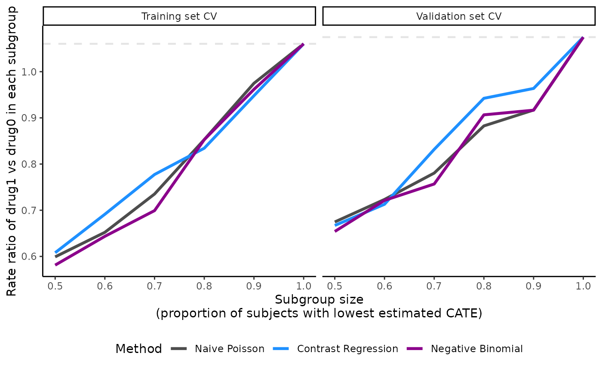

Examples for count outcome
Vignette 2 of 5
October 24, 2022
Count-examples.Rmd
precmed: Precision Medicine in R
A doubly robust precision medicine approach to estimate and validate conditional average treatment effects
Examples with count outcome of the entire workflow
Example data set
We use the following simulated data to demonstrate the precmed functions for count outcomes. The data set countExample was simulated based on real-world claims data in multiple sclerosis and has 4,000 observations and 9 variables.
We will use
yas the count outcome, which is the number of relapses during follow-up.We will use
yearsas the offset variable, which is number of years during follow-up.We will use
trtas the treatment variable, which has 2 drugs (drug0 and drug1).The rest of the variables are baseline patient characteristics. Variable
ageis centered at 48 years old. The medical costs in the year prior to treatment initiationprevious_costis centered at 13,824 USD and scaled with standard deviation 20,172 USD.
#> 'data.frame': 4000 obs. of 9 variables:
#> $ age : num [1:4000, 1] -21.22 -2.22 -10.22 6.78 4.78 ...
#> ..- attr(*, "scaled:center")= num 46.2
#> $ female : int 0 1 1 0 1 0 1 0 1 1 ...
#> $ previous_treatment : Factor w/ 3 levels "drugA","drugB",..: 1 1 1 1 3 3 3 3 3 1 ...
#> $ previous_cost : num [1:4000, 1] 0.451 -0.194 -0.534 -0.337 -0.271 ...
#> ..- attr(*, "scaled:center")= num 13824
#> ..- attr(*, "scaled:scale")= num 20172
#> $ previous_number_symptoms: Factor w/ 3 levels "0","1",">=2": 2 2 2 2 2 2 2 3 2 1 ...
#> $ previous_number_relapses: int 0 0 1 1 0 0 0 0 1 1 ...
#> $ trt : Factor w/ 2 levels "drug0","drug1": 2 1 1 2 2 1 2 2 2 2 ...
#> $ y : int 0 0 0 0 1 0 0 0 0 0 ...
#> $ years : num 0.2847 0.6105 2.653 0.0383 2.2697 ...Internal validation via catecv()
We first run the internal validation to compare 5 scoring methods. This is done with the function catecv(). This first step gives results in the form of a “precmed” object which will be used in the next steps to compare the performance of the scoring methods.
The mandatory arguments in catecv() are response, data, score.method, cate.model, and ps.model. They must be specified by the user.
The
responseargument specifies the type of outcome in the data. For count outcomes,response= “count”. This informs the function of the necessary arguments and methods to use.The argument
dataindicates the data frame in which the outcome, treatment and covariates specified in eithercate.modelorps.modelshould be fetched.-
The
score.methodargument specifies the precision medicine (PM) methods to be used to calculate the CATE scores. There are a total of 5 scoring methods implemented:poissonfits a Poisson model separately by treatment group.boostinguses gradient boosted regression models (GBM) separately by treatment group.twoRegimplements the doubly robust two regressions estimator in @yadlowsky2020estimation.contrastRegimplements the doubly robust contrast regression estimator from @yadlowsky2020estimation.negBinfits negative binomial regressions by treatment group. This method is recommended if there is overdispersion in the data.
For this toy example we selected poisson, contrastReg and negBin to limit run time.
- The argument
cate.modelspecifies the CATE model as a formula, with the outcomeysupplied on the left-hand side and the explanatory covariates supplied on the right-hand side. In the example, we choose to specify to CATE as a linear combination of the following covariates: age, sex, previous treatment, medical costs in the year prior to treatment initiation, and number of relapses in the year prior to treatment initiation. Non-linear or interaction terms could also be included. The CATE model has the offsetlog(years)to account for the varying exposure times across patients. Note that the treatment variable is not supplied incate.modelsince this is an outcome model.
- The
ps.modelargument specifies the PS model as a formula, with the treatment variabletrton the left-hand side and the covariates (age and previous treatment in this example) on the right-hand side. The variabletrtmust be supplied as a numeric variable taking only 2 values, 1 for active treatment and 0 for control or comparator. If it is not the case,catecvcount()will stop with error iftrttakes more than 2 distinct values or will automatically transformtrtinto a numeric variable. In this example,trt(a factor variable taking values “drug0” and “drug1”) was transformed and a warning message was left to the user (see output below):Variable trt was recoded to 0/1 with drug0->0 and drug1->1. If the data are from a RCT, it suffices to specifyps.model= trt ~ 1. Note that the PS model is only used in the estimation of the 2 doubly robust methods (two and contrast regressions).
We also specified the following non-mandatory arguments to fit with the data and problem at hand: initial.predictor.method, higher.y, cv.n, seed, plot.gbmperf and verbose.
initial.predictor.methodspecifies how predictions of the outcome are estimated in two regressions and contrast regression. Flexible models can be used such as GBM (“boosting”) or generalized additive models (“gam”). Both methods are computationally intensive so we choose “poisson” to obtain predictions from a Poisson regression, which reduces the computational time at the expense of stricter parametric assumptions and less flexibility.higher.ywas set to FALSE because lower number of relapses are more desirable in our example. Hence, we are telling the function that subgroups of high responders to drug1 vs drug0 should have lower number of relapses (see section Validation curves and the ABC statistics for illustration). In other situation, higher outcomes may be more favorable, for example, walking more steps in a study on physical activity. It is important for this argument to match with theyoutcome because it will affect how the subgroups are defined by the CATE scores and the performance metrics.We perform 5 CV iterations by specifying
cv.n= 5. Typically, more CV iterations are desirable although associated with longer computational times.We set a random seed
seed= 999 to reproduce the results.We avoid generating the boosting performance plots by specifying
plot.gbmperf= FALSE.When
verbose= 1, progress messages are printed in the R console but errors and warnings are not printed. The current CV iteration is printed, followed by the steps of the CV procedure (splitting the data, training the models, validating the models) and warnings or errors that have occurred during the steps (none in this example). A timestamp and a progress bar are also displayed upon completion of a CV iteration. IfcontrastRegwas selected as one of the methods inscore.method, an additional line of output message will indicate whether the algorithm has converged.
There are many other non-mandatory arguments that catecv() can accept. Please see the More Examples section for more examples and the Function description section for details. If you run into errors or warnings with your data, it might be helpful to go over the descriptions to see if you need to alter the default values. In this toy example, we keep the default values of the remaining arguments.
output_catecv <- catecv(response = "count",
data = countExample,
score.method = c("poisson", "contrastReg", "negBin"),
cate.model = y ~ age + female + previous_treatment + previous_cost + previous_number_relapses + offset(log(years)),
ps.model = trt ~ age + previous_treatment,
initial.predictor.method = "poisson",
higher.y = FALSE,
cv.n = 5,
seed = 999,
plot.gbmperf = FALSE,
verbose = 1)
#> Warning in data.preproc(fun = "crossv", cate.model = cate.model, ps.model = ps.model, : Variable trt was recoded to 0/1 with drug0->0 and drug1->1.
#>
|
| | 0%
#> cv = 1
#> splitting the data..
#> training..
#> validating..
#> convergence TRUE
#> Mon Oct 24 13:24:05 2022
#>
|
|============== | 20%
#> cv = 2
#> splitting the data..
#> training..
#> validating..
#> convergence TRUE
#> Mon Oct 24 13:24:10 2022
#>
|
|============================ | 40%
#> cv = 3
#> splitting the data..
#> training..
#> validating..
#> convergence TRUE
#> Mon Oct 24 13:24:18 2022
#>
|
|========================================== | 60%
#> cv = 4
#> splitting the data..
#> training..
#> validating..
#> convergence TRUE
#> Mon Oct 24 13:24:26 2022
#>
|
|======================================================== | 80%
#> cv = 5
#> splitting the data..
#> training..
#> validating..
#> convergence TRUE
#> Mon Oct 24 13:24:34 2022
#>
|
|======================================================================| 100%
#> Total runtime : 39.38 secsThe output of catecv() is an object of class “precmed” and here we named it output_catecv. It carries the relevant information to use in the next step of the workflow which selects the method (among those specified in the argument score.method) capturing the highest level of treatment effect heterogeneity. The output, which is described below, will be used in the functions plot(), boxplot() and abc().
For each method specified in the argument score.method, the following 4 groups of outputs are generated. We use the results from contrastReg as an example.
1. ATEs in nested subgroups of high responders
This output stores the ATEs - the ratio of annualized relapse rate between drug1 vs drug0 in this example - in nested subgroups of patients of high responders to drug 1 in the training ($ate.est.train.high.cv) and validation ($ate.est.valid.high.cv) sets across all CV iterations. For count outcomes, When higher.y = TRUE, higher CATE scores correspond to high responders to drug1. When higher.y = FALSE, lower CATE scores correspond to high responders to drug1. Note that this is different for survival outcomes. The direction of CATE scores depends on both higher.y and outcome type.
output_catecv$ate.contrastReg$ate.est.train.high.cv
#> cv1 cv2 cv3 cv4 cv5
#> prop0.5 0.5915071 0.6428854 0.5744973 0.6406698 0.5924975
#> prop0.6 0.6722855 0.7114461 0.6591966 0.6871502 0.7186517
#> prop0.7 0.7371734 0.8399117 0.7806273 0.7779180 0.7539283
#> prop0.8 0.8034239 0.9082507 0.8218952 0.8269917 0.8117300
#> prop0.9 0.9027108 1.0257463 0.9595834 0.9049020 0.9452626
#> prop1 1.0599740 1.0520675 1.0577453 1.0641114 1.0677619
output_catecv$ate.contrastReg$ate.est.valid.high.cv
#> cv1 cv2 cv3 cv4 cv5
#> prop0.5 0.7448829 0.6271739 0.8552290 0.5565145 0.5514821
#> prop0.6 0.7404875 0.7224230 0.8308576 0.5906053 0.6909427
#> prop0.7 0.9166009 0.7876447 0.8468713 0.8076085 0.7944857
#> prop0.8 1.1280003 0.8535919 0.9563156 0.9041068 0.8734434
#> prop0.9 1.1300157 0.8417894 0.9364762 0.9264986 0.9791587
#> prop1 1.0812603 1.0978549 1.0531927 1.0726353 1.0689638The output is a matrix with columns corresponding to the CV iterations, labeled from 1 to cv.n, and rows corresponding to nested subgroups. The nested subgroups of patients are defined by the argument prop.cutoff. Here, we use the default seq(0.5, 1, length = 6) which defines 6 nested subgroups with the 50%, 60%, 70%, 80%, 90% and 100% lowest (highest if higher.y = TRUE) CATE scores estimated by contrast regression. The rows in the output are labeled to reflect the user-specified proportions used to build the subgroups.
For example, in the training set and in the first CV iterations (first column labeled “cv1”), the subgroup defined with the 50% lowest CATE scores (first row labeled “prop0.5”) has an estimated RR of 0.592. In contrast, the subgroup defined with all patients (last row labeled “prop1”) has an estimated RR of 1.06.
2. ATEs in nested subgroups of low responders
This output stores the ATEs in nested subgroups of low responders to drug1 in the training ($ate.est.train.low.cv) and validation ($ate.est.valid.low.cv) sets across all CV iterations. For count outcomes, when higher.y = TRUE, lower CATE scores correspond to low responders to drug1. When higher.y = FALSE, higher CATE scores correspond to low responders to drug1. Again, this is different for survival outcomes. The direction of CATE scores depends on both higher.y and outcome type.
output_catecv$ate.contrastReg$ate.est.train.low.cv
#> cv1 cv2 cv3 cv4 cv5
#> prop0.5 1.616081 1.556901 1.657101 1.542445 1.623386
#> prop0.4 1.715570 1.575580 1.727447 1.615714 1.594635
#> prop0.3 1.865026 1.529785 1.629855 1.648721 1.737306
#> prop0.2 1.919854 1.572316 1.963560 1.845068 2.122016
#> prop0.1 2.093288 1.254235 1.522567 2.118723 2.074404The outputs are also matrices with columns corresponding to the CV iterations and rows corresponding to nested subgroups.
The output for the low responders brings additional information to the user. It gives the ATEs in the complement of each nested subgroup of high responders. For example, the complement of the subgroup of high responders defined as patients with the 60% lowest (highest if higher.y = TRUE) estimated CATE scores is the subgroup low responders defined as patients with the 40% highest (lowest if higher.y = TRUE) estimated CATE scores, labeled as “prop0.4”. In the training set and in the first CV iterations, the estimated RR is 0.672 in the 60% high responders to drug 1 and 1.716 in the 40% low responders.
3. ATEs in mutually exclusive subgroups
This output stores the ATEs in mutually exclusive multi-category subgroups of patients in the training ($ate.est.train.group.cv) and validation ($ate.est.valid.group.cv) sets across all CV iterations.
output_catecv$ate.contrastReg$ate.est.train.group.cv
#> cv1 cv2 cv3 cv4 cv5
#> prop0.33 1.8635694 1.487886 1.7151928 1.6904282 1.6561713
#> prop0.67 1.0633686 1.502770 1.0504965 1.1763982 1.0960883
#> prop1 0.4867885 0.470482 0.4762452 0.4816721 0.5361898
output_catecv$ate.contrastReg$ate.est.valid.group.cv
#> cv1 cv2 cv3 cv4 cv5
#> prop0.33 1.4220392 1.9876476 1.3647971 1.6091552 1.9901237
#> prop0.67 0.7328152 0.7720613 1.0883491 0.9727634 0.9083542
#> prop1 0.8122051 0.6583514 0.6702625 0.5232875 0.6028634The output is a matrix with columns corresponding to the CV iterations and rows corresponding to the mutually exclusive subgroups. The previous 2 outputs only focus on binary subgroups (high or low responders). Here, the mutually exclusive subgroups can be more than 2 and are defined by the argument prop.multi. We use the default c(0, 1/3, 2/3, 1) which defines 3 subgroups of patients with the 33% lowest, 33% middle and 33% highest estimated CATE scores when higher.y = FALSE (as in this example), or with the 33% highest, 33% middle and 33% lowest estimated CATE scores when higher.y = FALSE. Taking the first column as an example, the first CV iteration calculated 1.864 as the RR for the subgroup with the 33% lowest estimated CATE scores, 1.063 as the RR for subgroup with the 33% middle estimated CATE scores, and 0.487 as the RR for subgroup with the 33% highest estimated CATE scores.
Comparison of methods with abc()
The ABC statistics is calculated by abc() for each scoring method specified in catecv() and for each of the cv.n CV iterations using the output object output_catecv from catecv(). The ABC corresponds to the area between the curve formed by the ATEs in subgroups of high responders in the validation set (e.g., output_catecv$ate.contrastReg$ate.est.valid.cv for contrast regression) and the horizontal line representing the ATE in the validation set. A higher ABC value means that the method captures more treatment effect heterogeneity. See the Validation curves and the ABC statistics section for a detailed illustration of the relationship between higher.y, abc, and the validation curves.
output_abc <- abc(x = output_catecv)
output_abc
#> cv1 cv2 cv3 cv4 cv5
#> poisson 0.13758995 0.2236276 0.06938081 0.09647510 0.1304204
#> contrastReg 0.07300565 0.1605130 0.06858134 0.14825053 0.1309099
#> negBin 0.14517127 0.2203584 0.08899030 0.09382214 0.1395976The output is a matrix with columns corresponding to the CV iterations and rows corresponding to the scoring methods specified in score.method. For example, in CV iteration 1, negative binomial (“negBin”) has an ABC of 0.145, which is the highest in this CV iteration, meaning that negative binomial offers the best performance in the first CV iteration. The user can combine the ABC for each method across iterations:
average_abc <- apply(output_abc, 1, mean)
average_abc
#> poisson contrastReg negBin
#> 0.1314988 0.1162521 0.1375879In this example, negative binomial also offers the best overall performance because it has the highest average ABC, followed closely by Poisson.
Visualization of the validation curves with plot()
The ATEs of nested subgroups of high responders to drug1 (e.g., output_catecv$ate.contrastReg$ate.est.train.high.cv and output_catecv$ate.contrastReg$ate.est.valid.high.cv for contrast regression) can be visualized as a side-by-side line plot, with training results on the left and validation results on the right. The x-axis is determined by prop.cutoff and the y-axis is the estimated ATEs averaged over cv.n CV iterations as specified by cv.i = NULL. The estimated ATE is expressed as a RR of drug1 versus drug0 for our toy example. By default, the function retrieves the name of the treatment variable (trt) and the original labels (drug0 and drug1) to specify a meaningful y-axis label. Otherwise, it is possible to customize the y-axis label via the ylab, for example, by using Rate ratio of drug1 vs drug0 in each subgroup.
Steeper slopes indicate more treatment effect heterogeneity between drug1 and drug0. Because higher.y = FALSE in this example, the slopes should be increasing from left (prop.cutoff = 0.5) to right (prop.cutoff = 1) if treatment effect heterogeneity is present. The method that has the steepest slope in the validation results would be selected because it captures the most treatment effect heterogeneity while generalizing well to unseen data.
plot(x = output_catecv)
For this toy example, the methods are performing well in the training data as per the steep, increasing slopes on the left plot. Moreover, all methods generalize well to the validation data, as indicated by the monotonous increasing curves in the validation data (right plot). The dashed gray line is the ATE in the entire data set, which is why all lines merge to this reference line when subgroup size is 100% of the data (prop.cutoff = 1). For more explanation on the validation curves, see the Function description section.
The plot’s legend includes the ABC statistics in the validation set. The user can choose to mute the ABC annotations by specifying show.abc = FALSE.
plot(x = output_catecv,
show.abc = FALSE,
ylab = c("Rate ratio of drug1 vs drug0 in each subgroup"))
The user can choose to plot the validation curves of only one CV iteration instead of the average of all CV iterations. In the following example, we plot the validation curves of the second CV iteration by specifying cv.i = 2 and in grayscale by specifying grayscale = TRUE.
plot(x = output_catecv,
cv.i = 2,
grayscale = TRUE,
ylab = c("Rate ratio of drug1 vs drug0 in each subgroup"))Same as abc(), the user can also choose to use the median (instead of mean [default]) of the ATEs across CV iterations by specifying the argument combine = “median” in plot().
Visualization of the ATE in subgroups with boxplot()
The ATEs of multi-category subgroups that are mutually exclusive can be visualized as box plots, with one box plot for each scoring method. Only validation results are visualized here. The x-axis is determined by prop.multi and the y-axis is the estimated ATEs in each subgroup. We specify the ylab argument accordingly. The subgroups correspond to each row of the ate.est.valid.group.cv result in output_catecv, so in this example the subgroups are patient with the 33% lowest (0-33%), middle 33% (33-66%), and highest 33% (66-100%) estimated CATE scores. The box plot shows the distribution of the ATEs over all cv.n CV iterations, instead of a summary statistics like mean or median in plot().
boxplot(x = output_catecv,
ylab = "Rate ratio of drug1 vs drug0 in each subgroup")For this toy example, we can see why the two regressions method has the highest ABC and performs the best in the validation curves in the previous sections. Two regression has a decreasing RR as we go from the subgroup with the 33% lowest CATE scores (0-33%) to subgroup with the 33% highest CATE scores (66-100%), implying that there is some evidence of heterogeneous treatment effect and the CATE scores estimated with two regressions can distinguish the treatment heterogeneity in the data. In comparison, the other 3 methods seem to struggle with the validation data. Even tough they show different subgroups, we can see that the box plots correspond to the other 2 metrics. Note that the y-axis can have different scales for different scoring methods.
Although we provided 3 different metrics to summarize and visualize the
catecv()outputs, the user is encouraged to choose their own way of data wrangling that fits to their particular situation.
Estimation of the CATE score with catefit()
If no internal validation is needed or the user has chosen the scoring methods wanted, we can fit the PM methods directly to the entire data set to estimate the CATE score. The ATE by subgroup defined by prop.cutoff can also be retrieved. This is done with the function catefit().
In general, catefit() has similar arguments as catecv(). The mandatory arguments are the same: response, data, score.method, cate.model, and ps.model and they must be specified by the user. The user can also specify the non-mandatory arguments to fit with the data and problem at hand. Please see the Function description section for details. Because there is no internal validation, catefit() does not have the cv.n, train.prop, abc, and prop.multi arguments. This is the main distinction between these 2 output functions. We specified the mandatory and non-mandatory arguments the same way as catecv() in the example for demonstration purpose.
If you run into errors or warnings with your data, it might be helpful to go over the descriptions to see if you need to alter the default values. In this toy example, we keep the default values of the remaining arguments.
t0 <- Sys.time()
output_catefit <- catefit(response = "count",
data = countExample,
score.method = c("poisson", "boosting", "twoReg", "contrastReg", "negBin"),
cate.model = y ~ age + female + previous_treatment + previous_cost + previous_number_relapses + offset(log(years)),
ps.model = trt ~ age + previous_treatment,
initial.predictor.method = "poisson",
higher.y = FALSE,
seed = 999)
#> Warning in data.preproc(fun = "catefit", cate.model = cate.model, ps.model = ps.model, : Variable trt was recoded to 0/1 with drug0->0 and drug1->1.
t1 <- Sys.time()
t1 - t0
#> Time difference of 11.73349 secsDespite the similar arguments, the outputs of catefit() and catecv() differ. Each method specified in score.method has the following sets of results in catefit():
-
scorecontains the log-transformed estimated CATE scores for each subject. CATE score is a linear combination of the variables specified in thecate.modelargument. Same as the outcome, lower CATE scores are more desirable ifhigher.y= FALSE and vice versa. Each subject has one CATE score so the length of this output is 4,000 for our toy example. Below we show the CATE scores estimated with contrast regression for the first 6 subjects in the data.
length(output_catefit$score.contrastReg)
#> [1] 4000
head(output_catefit$score.contrastReg)
#> [1] 0.1499685 0.2620096 0.5860160 -0.8024144 -0.1906713 -0.4043656-
coefficientscontains the estimated coefficients of the CATE score for each scoring method. It is a data frame of the covariates (including intercept) as rows and scoring methods as columns. In our toy example, there are 5 covariates in thecate.model(including a categorical variable with 3 distinct factors) so there are 7 rows of estimated coefficients within each column. Since contrast regression is one of the scoring methods specified in the example, we see that contrast regression has an additional column with the standard errors of the estimated coefficients. Boosting does not estimate coefficients (it directly predicts the score) so there is no coefficient result for this method.
output_catefit$coefficients
#> poisson twoReg contrastReg SE_contrastReg
#> (Intercept) -0.58185218 -0.57207204 -0.59736822 0.37228114
#> age -0.01117701 -0.04008509 -0.03578803 0.01382166
#> female 0.58829733 0.73775319 0.77478198 0.36574103
#> previous_treatmentdrugB 0.73724361 0.64060449 0.74664939 0.35878718
#> previous_treatmentdrugC 0.15545985 -0.25803279 -0.20421285 0.26463665
#> previous_cost -0.13035642 -0.08485511 -0.02671264 0.15747560
#> previous_number_relapses -0.05339112 0.06098503 0.02863769 0.16914400
#> negBin
#> (Intercept) -0.59232437
#> age -0.01410487
#> female 0.59602219
#> previous_treatmentdrugB 0.76032497
#> previous_treatmentdrugC 0.13262969
#> previous_cost -0.13952096
#> previous_number_relapses -0.05034136We can define the estimated CATE scores for contrast regression like shown below. The user can use this information to study the influence of each covariate. \[ \begin{aligned} \widehat{CATE} = -0.60 & - 0.04 \times \text{age} \\ & + 0.77 \times \text{female (vs male)} \\ & + 0.75 \times \text{previous treatment drug B (vs drug A)} \\ & - 0.21 \times \text{previous treatment drug C (vs drug A)} \\ & - 0.02 \times \text{previous medical costs} \\ & + 0.04 \times \text{previous number of relapses} \end{aligned} \]
-
atecontains estimated ATEs in each nested subgroup of high responders to drug 1 defined byprop.cutoff. The subgroups are defined based on the estimated CATE scores with the specified scoring method. In this example, we show the estimated ATEs of subgroups identified by CATE scores of contrast regression. For example, the estimated ATE for the subgroup of subjects constructed based on the 50% (“prop0.5”) lowest CATE scores estimated from contrast regression is 0.62.
output_catefit$ate.contrastReg
#> prop0.5 prop0.6 prop0.7 prop0.8 prop0.9 prop1
#> 0.6233165 0.6624837 0.7904911 0.8451963 0.9372587 1.0640579You are encouraged to summarize and visualize the outputs in whichever way that fits a particular situation outside the package’s functions. For example, it is possible to plot the densities of all CATE scores with ggplot(). There are some subjects with extremely low CATE scores but most of the samples fall between -1 and 1 with triple modes at around -0.5, 0, and 0.8.
dataplot <- data.frame(score = factor(rep(c("Boosting", "Naive Poisson", "Two regressions", "Contrast regression", "Negative Binomial"), each = length(output_catefit$score.boosting))),
value = c(output_catefit$score.boosting, output_catefit$score.poisson, output_catefit$score.twoReg, output_catefit$score.contrastReg, output_catefit$score.negBin))
dataplot %>%
ggplot(aes(x = value, fill = score)) +
geom_density(alpha = 0.5) +
theme_classic() +
labs(x = "Estimated CATE score", y = "Density", fill = "Method")Estimation of the ATE with atefit()
Beyond exploring treatment effect heterogeneity, atefit() allows estimating the ATE in terms of rate ratio. The rate ratio estimator is doubly robust, meaning that the estimator is consistent if the PS model (argument ps.model) or the outcome model (argument cate.model) or both are correctly specified. The function also provides standard error, confidence intervals, and p-values based on bootstrap.
The mandatory arguments are: response, data, cate.model, and ps.model. Those arguments have the same definitions as in catecv() and catefit().
output_atefit <- atefit(response = "count",
data = countExample,
cate.model = y ~ age + female + previous_treatment + previous_cost
+ previous_number_relapses + offset(log(years)),
ps.model = trt ~ age + previous_treatment,
n.boot = 50,
seed = 999,
verbose = 0)
#> Warning in data.preproc(fun = "drinf", cate.model = cate.model, ps.model = ps.model, : Variable trt was recoded to 0/1 with drug0->0 and drug1->1.When verbose = 1, the function outputs a progress bar in the console.
output_atefit
#> Average treatment effect:
#>
#> estimate SE CI.lower CI.upper pvalue
#> log.rate.ratio 0.06311746 0.1624482 -0.2552752 0.3815101 0.6976173
#>
#> Estimated event rates:
#>
#> estimate
#> rate1 0.2860635
#> rate0 0.2685660
#> Warning in print.atefit(x): Variable trt was recoded to 0/1 with drug0->0 and drug1->1.The output of atefit() shows the point estimate, standard error (“SE”), lower (“CI.lower”) and upper (“CI.upper”) bound of the 95% confidence interval, and the p-value (“pvalue”) for the log rate ratio ($log.rate.ratio) as well as the point estimate for the rate in the 2 treatment groups ($rate0 and $rate1). For example, the log rate ratio of 0.06 and the 95% confidence interval of (-0.26, 0.38) are displayed in the output. The user can retrieve the rate ratio to facilitate the interpretation:
rate.ratio <- exp(output_atefit$log.rate.ratio$estimate)
rate.ratio
#> [1] 1.065152
CI.rate.ratio <- exp(output_atefit$log.rate.ratio$estimate + c(-1, 1) * qnorm(0.975) * sqrt(output_atefit$log.rate.ratio$SE))
CI.rate.ratio
#> [1] 0.4834326 2.3468602The rate ratio of 1.07 along with the 95% confidence interval of (0.48, 2.35) suggest that drug 0 is superior to drug 1 because the ratio is greater than 1 and lower outcomes are preferred, but that this superiority is not statistically significant given the p-value of 0.7 in the output ($log.rate.ratio$pvalue).
The output of atefit() is expressed in terms of treatment 0 vs 1 and the rate ratio is expressed as the ratio of the treatment coded as 1 over the treatment coded as 0. If the treatment variable is not coded as 0/1 in the data set, the function returns a warning output_atefit$warning which indicates which key was used to recode the treatment variable into a 0/1 variable.
output_atefit$warning
#> [1] "Variable trt was recoded to 0/1 with drug0->0 and drug1->1.\n"Using plot(output_atefit), a histograms is generated of the point estimates across the n.boot bootstrap iterations for the log rate ratio. A red vertical line is added to each histogram with the mean of the bootstrap estimates.
Histograms of bootstrap log rate ratio estimators after 500 bootstrap iterations, produced if plot.boot = TRUE
Other precmed vignettes in this serie
1. General introduction
2. Examples for count outcome
3. Examples for survival outcome
4. Additional examples
5. Theoretical details